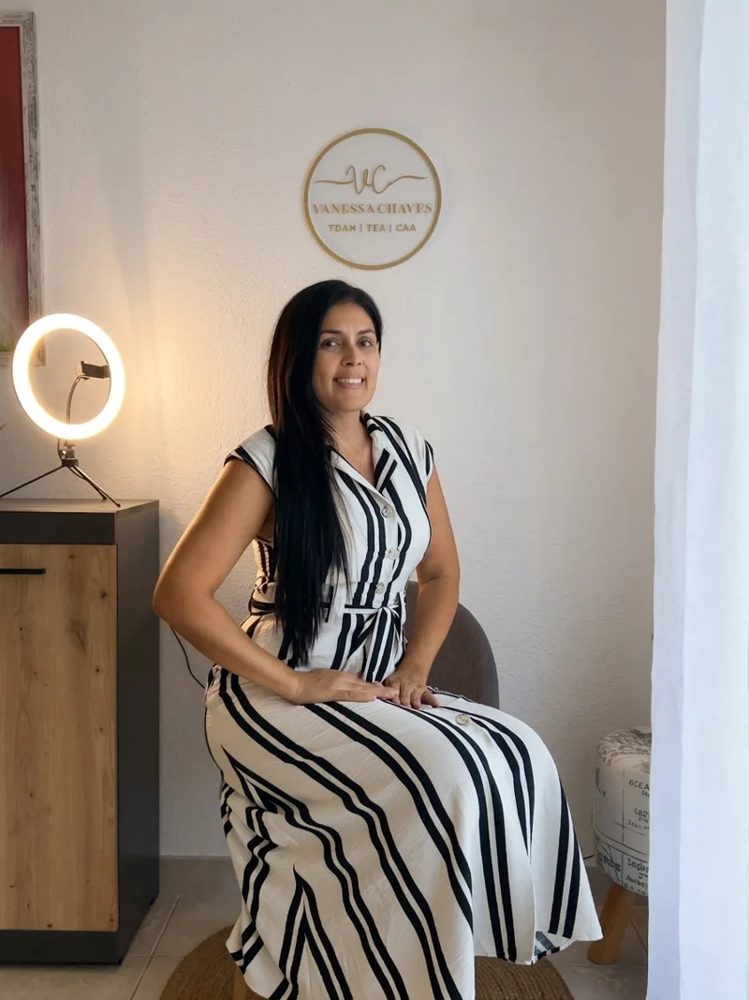

O que a ciência mostra sobre o TDAH e o TEA
Informação clara para você enxergar o seu filho além do rótulo de “birra” ou “falta de limite”.
Orientação parental em TDAH e TEA
Sou a Vanessa: fonoaudióloga, psicóloga e mãe atípica como você. Ajudo famílias a tornar a rotina com TDAH e autismo mais leve, com informação e acolhimento.
A culpa pode ocupar muito espaço. Mas nem todo comportamento difícil é falta de limite. Quando a gente entende o que está por trás, a forma de agir muda, e a casa muda junto.
Acompanhamento
Porque cuidar do seu filho também pode começar por cuidar da forma como toda a família vive essa rotina.
Informação clara para você enxergar o seu filho além do rótulo de “birra” ou “falta de limite”.
Estratégias práticas para as horas mais difíceis do dia, sem precisar gritar e sem depender de manual.
Espaço para você também. Uma mãe menos sobrecarregada consegue apoiar melhor.
Quer saber como funciona?
Me envie “CALMA” no direct.

Quem é Vanessa Chaves?
Sei o que é comemorar uma primeira palavra que veio mais tarde e aprender a linguagem do seu filho mesmo quando ele não usa palavras. Junto da prática de casa, trago a formação clínica para falar de TDAH, TEA e parentalidade com um único objetivo: te ajudar a entender seu filho (e a si mesma) sem culpa.
Se sentir sozinha numa sala cheia de mães “típicas”, mesmo sendo amada por elas.
Carregar um cansaço que ninguém vê, porque por fora parece que está tudo bem.
Comemorar conquistas que, pra outras famílias, nem seriam notadas.
Se cobrar por não dar conta de tudo, quando na verdade está dando conta de muito mais do que imagina.
Aprender, na prática e sem manual, a amar diferente.
Se você se reconheceu nessas linhas:
Você não está sozinha.
No Instagram
Agora me conte
Me chame no direct do Instagram. Eu leio cada mensagem e te explico como o acompanhamento pode ajudar a sua casa.